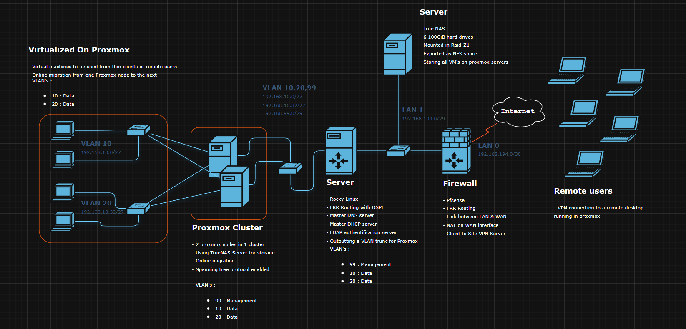

Infrastructure virtuelle simulant une petite entreprise — VMware Workstation Pro.
Cette page documente un projet personnel que j'utilise pour approfondir la matière vue dans le cadre de mes cours.
Je réalise ce projet dans un environnement entièrement virtualisé, en utilisant VMware Workstation Pro comme hyperviseur.
Mon approche est de simuler une infrastructure de petite entreprise complète.
